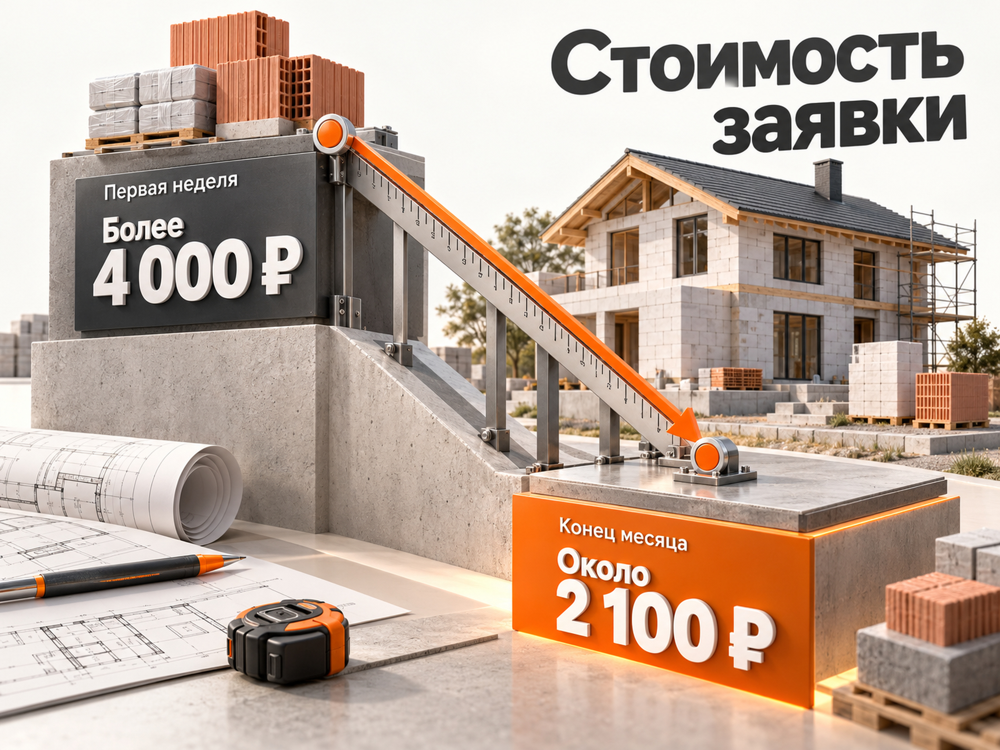

Блог о платном трафике
Реклама строительной компании: где искать клиентов и как получать заявки
Чтобы реклама строительной компании приносила клиентов, нужно выбрать каналы под конкретную услугу, показать выполненные объекты, предложить понятный расчёт стоимости и отслеживать качество обращений. Для сформированного спроса я в первую очередь рассматриваю Яндекс Директ. Авито и геосервисы могут дополнять его, а SEO помогает получать обращения из поиска в долгосрочной перспективе.
Главный показатель в строительстве не количество заявок, а число потенциальных заказчиков, которым подходят условия компании. Человек может оставить заявку на строительство дома, но не иметь участка, располагать неподходящим бюджетом или планировать стройку через несколько лет.
Поэтому продвижение строительных услуг нужно оценивать по всей воронке: от рекламного обращения до квалификации клиента, подготовки сметы, переговоров и договора.
Где рекламировать строительную компанию
Выбор канала зависит от того, какие объекты строит компания, в каком регионе работает и на какой стадии выбора находится заказчик. Универсального рекламного канала для строительства частных домов, фундаментов, ремонта квартир и коммерческих объектов нет.
| Канал | Когда использовать | Что учитывать |
|---|---|---|
| Яндекс Директ, Поиск | Люди уже ищут подрядчика или строительную услугу | Конкуренция, стоимость заявки и качество спроса |
| РСЯ и ретаргетинг | Нужно расширить охват или вернуть потенциальных клиентов | Качество аудитории и более ранняя стадия выбора |
| Авито | Частное строительство, ремонт, отдельные строительные работы | Количество диалогов не равно количеству заказов |
| Яндекс Карты и 2ГИС | Компания обслуживает определённый город или регион | Карточка организации, отзывы, фотографии, география |
| SEO | Нужно получать поисковый трафик без оплаты каждого клика | Требуются время, полезные страницы и техническая оптимизация |
| ВКонтакте и контент | Нужно показать объекты, технологии, процесс строительства | Результат зависит от аудитории и предложения |
| Рекомендации и партнёрства | Есть довольные заказчики и смежные специалисты | Важно учитывать источник новых договоров |
Для подрядчика по строительству домов разумно сначала проверить спрос на Поиске и наличие качественного сайта. Для компании, которая устанавливает заборы или занимается небольшими строительными работами, параллельный тест Авито может быть не менее интересным.
В сегменте коммерческого строительства дополнительно важны профессиональные контакты, партнёрства, рекомендации и работа с организациями, которые уже планируют строительный проект.
Я бы не распределял бюджет равномерно между всеми каналами. Сначала нужно понять, где можно найти подходящего заказчика и сколько стоит его привлечение.
Как выбрать рекламу под конкретное строительное направление
Один и тот же рекламный подход не подходит для всех строительных услуг. У разных направлений отличаются спрос, средний чек, цикл сделки и причины выбора подрядчика.
| Направление | На что делать акцент в рекламе | Что показывать клиенту |
|---|---|---|
| Частные дома | Технология, комплектация, площадь, регион | Построенные дома, проекты, сметы |
| Фундаменты | Тип фундамента, параметры объекта, сроки работ | Технология, этапы, примеры объектов |
| Кровельные работы | Материал, тип крыши, объём работ | Фотографии, перечень работ, расчёт |
| Ремонт квартир | Вид ремонта, площадь, отделка | Портфолио, состав работ, сроки |
| Коммерческие объекты | Специализация, масштаб, опыт подрядчика | Реализованные проекты, документация, условия |
Например, заказчик дома из газобетона хочет увидеть соответствующие проекты и понять комплектацию. Человеку, которому необходим фундамент, важнее технология работ и расчёт под параметры участка.
Разделение рекламы по услугам позволяет точнее сопоставлять потребность человека с предложением компании.
Яндекс Директ для строительной компании
Яндекс Директ подходит для привлечения людей, которые уже ищут строительную компанию, подрядчика или конкретную услугу. В строительстве особенно полезен поисковый спрос с указанием технологии, типа объекта, географии и формата работ.
В актуальном Яндекс Директе Единая перфоманс-кампания позволяет размещать объявления на Поиске, в РСЯ и Картах. Места показа можно выбирать в настройках кампании.
Какие запросы использовать на Поиске
Начинать стоит с коммерческих запросов, которые отражают намерение заказать работу.
Примеры:
- строительство домов под ключ;
- построить дом из газобетона;
- строительство каркасного дома под ключ;
- строительная компания в конкретном городе;
- заказать строительство фундамента;
- подрядчик на строительство коммерческого здания.
Запросы «проект дома 120 м²» и «построить дом 120 м² под ключ» могут приводить людей на разных стадиях выбора. Первый пользователь может просто изучать планировки, второй уже искать исполнителя.
Информационные запросы вроде «как сделать фундамент своими руками», «бесплатные чертежи» или «расход кирпича на дом» не следует автоматически смешивать с коммерческими. При этом не каждую информационную фразу нужно безусловно исключать: иногда она помогает работать с аудиторией на раннем этапе выбора.
После запуска необходимо смотреть реальные поисковые запросы, в том числе трафик от автотаргетинга, и регулярно корректировать условия показов.
Когда подключать РСЯ
РСЯ полезна, если компания хочет расширить охват или повторно обратиться к людям, которые уже смотрели проекты и условия строительства.
Для дорогих строительных услуг покупатель редко принимает решение сразу. Он сравнивает технологии, посещает сайты подрядчиков, изучает портфолио и запрашивает несколько смет.
В объявлениях РСЯ я предпочитаю использовать реальные объекты: готовые дома, фасады, строительные этапы, фотографии реализованных проектов. Универсальные изображения красивых зданий сами по себе почти ничего не говорят о возможностях подрядчика.
Поиск и РСЯ нужно анализировать раздельно. Более дешёвый клик в РСЯ не означает, что оттуда приходит более выгодный клиент.
Подробности настройки приведены в отдельной статье «Яндекс Директ для строительной компании».
Что должно быть на сайте строительной компании
Посадочная страница должна подтвердить, что подрядчик выполняет нужные работы, подходит по географии и способен реализовать проект заказчика. Без этого даже качественная реклама будет терять потенциальных клиентов.
На сайте желательно показать:
- Специализацию. Какие объекты строит компания, какие услуги выполняет.
- Географию работы. Города, районы и территории, где принимаются заказы.
- Реальные проекты. Фотографии, характеристики и описание выполненных объектов.
- Стоимость. Примеры смет, комплектации или понятные факторы ценообразования.
- Порядок работы. От первого расчёта до договора и завершения строительства.
- Подтверждение надёжности. Договор, гарантии, сведения о компании, документы и отзывы.
- Способ обращения. Расчёт стоимости, консультация или обсуждение проекта.
Необязательно создавать отдельный сайт под каждую строительную услугу. Но под основные рекламные направления желательно подготовить самостоятельные посадочные страницы.
Например, объявление о строительстве дома из газобетона должно вести на страницу с газобетонными домами, а не на общий каталог, где одновременно представлены бани, кровля, ремонт и заборы.
Особенно полезны фотографии объектов на разных стадиях строительства. Они показывают не только итоговый результат, но и процесс работы подрядчика.
Как составить рекламное предложение, которое привлекает клиентов
Эффективный строительный оффер помогает человеку сразу понять, подходит ли ему компания. Формулировка «Строим качественно и недорого» слишком общая: она не уточняет ни специализацию, ни комплектацию, ни условия.
Лучше использовать конкретные характеристики услуги.
Пример для строительства домов
Заголовок: «Дома из газобетона под ключ»
Текст: «Проекты и комплектации. Посмотрите построенные объекты и получите расчёт стоимости под ваш участок».
Пример для фундаментов
Заголовок: «Строительство фундаментов»
Текст: «Расчёт под параметры вашего дома. Состав работ, технология и подготовка сметы».
Пример для коммерческого строительства
Заголовок: «Подрядчик для коммерческого объекта»
Текст: «Реализованные проекты, состав работ и подготовка предложения под техническое задание».
Это примеры формулировок, а не готовые объявления конкретной компании. Перед запуском нужно проверить, действительно ли подрядчик выполняет заявленные работы.
Стоимость «от», сроки и гарантии допустимо использовать только при наличии подтверждённых условий. Нет смысла обещать строительство за три месяца, если реальные сроки зависят от проекта и обстоятельств, которые компания не контролирует.
Реальный кейс: реклама строительства домов
В моём кейсе по рекламе строительства домов продвигалось строительство частных домов из керамического блока Porotherm.
Для привлечения клиентов использовались Поиск Яндекса и РСЯ.
В первую неделю после запуска стоимость заявки превышала 4000 ₽. К концу месяца её удалось снизить примерно до 2100 ₽.
| Период | Стоимость заявки |
|---|---|
| Первая неделя | Более 4000 ₽ |
| К концу первого месяца | Около 2100 ₽ |

Реклама работала параллельно с кампаниями заказчика. Основная часть обращений поступала из настроенных мной кампаний.
Этот результат показывает, почему нельзя оценивать строительную рекламу только по первым нескольким дням. После запуска необходимо анализировать поисковые запросы, аудитории, качество обращений и перераспределять бюджет между работающими направлениями.
При этом 2100 ₽ не является средней рыночной стоимостью заявки на строительство дома. Это показатель конкретного проекта на определённом этапе работы.
Данных о заключённых договорах и фактической выручке заказчик не предоставлял. Поэтому я не связываю снижение CPL с доказанным ростом продаж или окупаемости.
Почему дешёвая заявка не всегда означает хорошую рекламу
Для строительной компании качество лида важнее минимальной стоимости отправленной формы. Дешёвые обращения могут поступать от людей, которые не подходят по бюджету, географии или срокам начала работ.
Представим две рекламные кампании. Первая приносит много дешёвых обращений, но большинство заканчивается обычным вопросом о цене. Вторая приводит меньше заявок, однако клиенты чаще переходят к подготовке сметы и обсуждению договора.
Вторая кампания может оказаться для бизнеса выгоднее даже при более высокой цене обращения.
Как определить квалифицированного лида
Квалифицированный лид в строительстве - человек или организация с реальной потребностью в услуге, которая соответствует возможностям подрядчика.
Для первичной оценки я бы уточнял:
- тип объекта и необходимые работы;
- расположение участка или объекта;
- предполагаемую площадь и основные параметры;
- ориентировочный бюджет;
- желаемый срок начала строительства;
- готовность обсуждать расчёт, встречу или договор.
Отсутствие готового технического проекта само по себе не делает заявку нецелевой. Важно понимать, может ли компания помочь человеку на текущем этапе и есть ли перспектива сотрудничества.
В отчётности полезно разделять пять этапов: первичное обращение, квалификация, подготовка сметы, встреча или согласование условий, заключение договора.
Для каждого этапа желательно фиксировать количество клиентов и их первоначальный источник.
Как связать рекламу с реальными продажами
Яндекс Метрика позволяет загружать офлайн-конверсии и данные из CRM. При корректной привязке к визитам это помогает оценивать рекламные кампании по дальнейшим действиям клиентов, а не только по отправкам форм.
Нужно учитывать звонки, формы, квизы и фактические обращения через мессенджеры. Само нажатие на кнопку мессенджера не подтверждает, что человек отправил сообщение.
Если данные CRM регулярно возвращаются в аналитику, можно видеть, какие источники приводят квалифицированные заявки, сметы и договоры.
Показательный пример есть в моём кейсе по коммерческой недвижимости ЖК «Ватутинки Парк». В одном из периодов 10 из 12 обращений были квалифицированными. Это другая ниша, но принцип оценки качества лидов применим и к строительным услугам.
Сколько стоит реклама строительной компании и как рассчитать бюджет
Стоимость рекламы строительной компании зависит от региона, конкуренции, типа объектов, поискового спроса, качества сайта и конверсии отдела продаж.
Правильнее начинать расчёт не с произвольной суммы рекламного бюджета, а с того, сколько компания может потратить на привлечение одного договора.
Для этого нужны следующие показатели:
- допустимая стоимость привлечения клиента (CAC);
- доля обращений, которые становятся квалифицированными;
- конверсия квалифицированных лидов в договор;
- ожидаемая цена обычной заявки (CPL).
Основная формула:
Допустимый CPL = допустимый CAC × доля квалифицированных обращений × конверсия квалифицированного лида в договор.
Все доли в формуле используются в десятичных значениях.
Пример расчёта бюджета на строительную рекламу
Рассмотрим условную модель. Это не статистика рынка и не прогноз для конкретного города.
Предположим:
- рекламный бюджет составляет 60 000 ₽;
- средняя стоимость клика - 90 ₽;
- конверсия сайта в заявку - 3%;
- половина обращений соответствует условиям компании;
- каждый пятый квалифицированный лид в конечном счёте заключает договор.
Тогда расчёт выглядит так:
| Показатель | Расчёт | Результат |
|---|---|---|
| Бюджет | Исходное условие | 60 000 ₽ |
| Клики | 60 000 / 90 | Около 667 |
| Заявки | 667 × 3% | Около 20 |
| Стоимость заявки | 60 000 / 20 | 3000 ₽ |
| Квалифицированные лиды | 20 × 50% | 10 |
| Договоры | 10 × 20% | 2 |
| Стоимость договора | 60 000 / 2 | 30 000 ₽ |
При таких допущениях 60 000 ₽ рекламного бюджета потенциально соответствуют 20 заявкам, 10 квалифицированным лидам и двум договорам.
Но фактическая конверсия неизвестна заранее. Если она окажется ниже, результат ухудшится. Если конкуренция увеличит стоимость клика, тот же бюджет принесёт меньше переходов.
Кроме того, договор может быть подписан через несколько недель или месяцев после обращения. Поэтому расчёт не означает, что все продажи обязательно произойдут в месяц расходования бюджета.
Как определить допустимую стоимость клиента
Допустимый CAC нужно связывать с экономикой конкретного договора.
Например, если компания может выделить на привлечение одного нового заказчика максимум 30 000 ₽, а половина заявок проходит квалификацию и 20% квалифицированных лидов становятся клиентами, допустимая стоимость обычной заявки составляет:
30 000 × 50% × 20% = 3000 ₽.
Это расчётный предел при заданных условиях, а не рыночная норма.
Важно учитывать маржинальность договора, расходы на продажи и другие затраты. Выручка от строительства не равна прибыли подрядчика.
Для предварительной оценки рекламного бюджета можно использовать калькулятор бюджета рекламы, а общие принципы расчётов разобраны в статье «Стоимость контекстной рекламы».
Как запустить рекламу строительной компании: пошаговый план
Запуск лучше начинать с анализа строительных услуг и экономики, а не с создания объявлений. Так проще определить, какой результат считать успешным и где есть смысл расходовать бюджет.
- Выбрать приоритетное направление. Определить услуги, для которых есть свободные мощности, подходящая маржинальность и реальный спрос.
- Проанализировать конкурентов. Посмотреть их специализацию, проекты, комплектации, стоимость и преимущества, которые они подтверждают.
- Подготовить посадочную страницу. Показать реализованные объекты, условия работы и понятный способ получить расчёт.
- Настроить учёт обращений. Подключить Метрику, цели, отслеживание звонков и фиксацию заявок в CRM.
- Запустить рекламу по сформированному спросу. Начать с понятных коммерческих направлений и контролировать реальные запросы.
- Проверить дополнительные каналы. В зависимости от строительной услуги протестировать Авито, локальный поиск, Карты или РСЯ.
- Оценить качество лидов. Получать обратную связь от менеджеров по бюджету, типу объекта и готовности клиента.
- Оптимизировать рекламу. Отключать нерелевантные источники, улучшать предложения и перераспределять бюджет.
- Анализировать договоры. По мере накопления данных сопоставлять расходы с реальными клиентами и экономикой строительства.
Не стоит запускать все каналы сразу и делать выводы по нескольким обращениям. При небольшом бюджете полезнее сначала проверить одну или две наиболее перспективные связки.
Как понять, почему реклама строительной компании не приносит клиентов
Причину слабого результата нужно искать на конкретном этапе воронки.
| Проблема | Что проверить |
|---|---|
| Нет показов и переходов | Спрос, географию, настройки кампаний, бюджет |
| Клики есть, заявок мало | Поисковые запросы, страницу, предложение, формы |
| Заявок много, они нецелевые | Аудитории, условия показа, квалификацию, обещания |
| Заявки целевые, смет мало | Обработку обращений, сроки ответа, работу менеджеров |
| Смет много, договоров мало | Цена, комплектация, доверие, условия, конкурентоспособность |
| Результат ухудшается | Сезонность, изменения кампаний, конкуренцию, состояние сайта |
Если рекламный трафик качественный, но покупатели не заключают договоры, повышение рекламного бюджета не обязательно решит проблему.
Строительная компания должна понимать, на каком этапе теряет клиентов. Иногда выгоднее улучшить скорость обработки обращений или качество коммерческого предложения, чем покупать дополнительные клики.
Подробнее о проверке кампаний я писал в материале «Аудит Яндекс Директ».
Частые ошибки в рекламе строительных услуг
Рекламировать всё одной кампанией и одним предложением. Строительство домов, фундаменты и ремонт квартир могут иметь разные аудитории и экономику. Смешивание мешает оценивать результат.
Вести людей на нерелевантную страницу. Пользователь ищет конкретный объект или технологию, а попадает на общий сайт без соответствующего предложения.
Использовать неподтверждённые преимущества. Обещания минимальной цены, кратчайших сроков и исключительного качества без доказательств не помогают сформировать доверие.
Оценивать только количество заявок. Низкий CPL бесполезен, если большинство обращений не подходит строительной компании.
Не учитывать звонки и сообщения. Часть потенциальных клиентов может вообще не заполнять формы. Без учёта этих обращений эффективность каналов оценивается неправильно.
Не передавать данные из отдела продаж. Реклама может продолжать привлекать дешёвые обращения, даже если они почти никогда не становятся договорами.
Делать выводы слишком быстро. Для дорогих строительных услуг важно учитывать накопление статистики и длительный период принятия решения.
Частые вопросы
Можно ли рекламировать строительные услуги без сайта?
Да. Например, через объявления на Авито или подходящие площадки с собственными карточками услуг. Но для дорогого строительства полноценный сайт обычно удобнее: на нём можно показать проекты, этапы работы, комплектации, документы и способы обращения.
Когда лучше запускать рекламу строительной компании?
Запуск зависит от вида работ, региона и загрузки подрядчика. Строительный спрос может меняться по сезонам, поэтому полезно учитывать не только момент начала работ, но и время, которое заказчику потребуется для выбора компании, подготовки проекта и согласования сметы.
Стоит ли покупать готовые лиды на строительство?
Покупка лидов имеет смысл только тогда, когда понятны условия их получения, эксклюзивность, качество контактов и допустимая цена клиента. Перед масштабированием необходимо проверить, сколько таких обращений действительно соответствует требованиям компании и доходит до договора.
Итог
Реклама строительной компании приносит больше пользы, когда каждый канал связан с конкретной услугой, понятным предложением и системой оценки качества клиентов.
Яндекс Директ помогает находить сформированный спрос, Авито и геосервисы могут привлекать дополнительные обращения, а SEO и контент работают на долгосрочное присутствие компании в поиске.
При этом главный ориентир не самая дешёвая заявка, а стоимость привлечения подходящего заказчика и последующего договора.
Если строительной компании нужно запустить рекламу или разобраться в действующих кампаниях, можно обратиться ко мне. Я занимаюсь Яндекс Директом более 10 лет, работаю напрямую как ИП и оцениваю рекламу с учётом качества заявок и дальнейших продаж.